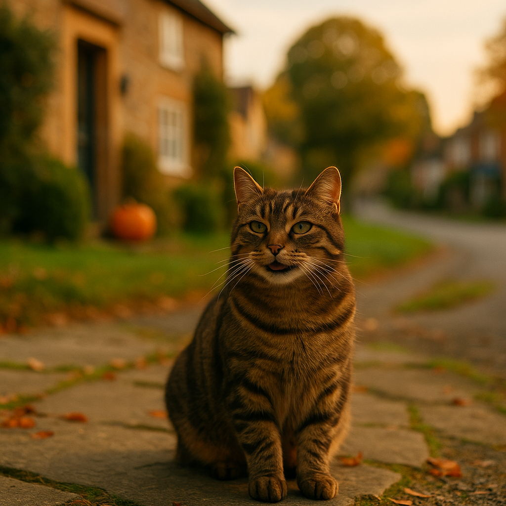

Keeping Outdoor Cats Safe in Autumn: Shorter Days, Cold Nights & Road Risks 2026
Contents
- Why Does Autumn Pose Unique Risks for Outdoor Cats?
- How Does Reduced Daylight Affect Cat Road Safety?
- How Do You Make Your Cat Visible in the Dark?
- How Should You Prepare for Cold Weather and Provide Outdoor Shelter?
- How Should You Manage Your Cat's Outdoor Routine During Shorter Days?
- What Are the Signs Your Cat Needs to Spend More Time Indoors?
- How Do You Check Your Cat for Injuries and Health Issues in Autumn?
- Why Should You Work With Your Vet on an Autumn Health Check?
- Frequently Asked Questions
This article contains affiliate links. We may earn a small commission if you make a purchase, at no extra cost to you.
Keeping outdoor cats safe in autumn means tackling three overlapping risks at once: reduced daylight that puts cats on the road during rush hour, dropping temperatures that can cause hypothermia and frostbite, and seasonal hazards like antifreeze and bonfires that peak in October and November. As Loyal & Loved explains, most autumn cat injuries are preventable with a handful of low-cost changes to your cat's routine and environment. This guide walks you through every practical step, from reflective collars to vet health checks, so you can keep your cat exploring safely as the nights draw in.
Olive the Tabby Cat, our resident independent spirit, would like it noted that she finds all of this fussing entirely unnecessary. She is, of course, wrong.
Why Does Autumn Pose Unique Risks for Outdoor Cats?
Autumn is uniquely dangerous for outdoor cats because the clocks changing in late October compresses peak cat activity hours directly into commuter traffic. According to Cats Protection, cats are most active at dawn and dusk, which means the GMT shift in 2026 puts millions of cats on UK roads at exactly 5pm to 6pm, the busiest period for vehicle movements. That timing overlap is not a coincidence; it is the single biggest reason autumn sees a measurable spike in cat road traffic accidents.
Beyond road risk, autumn introduces a cluster of environmental hazards that do not exist in summer. Antifreeze (ethylene glycol) becomes more common in driveways and garages from October onwards, and it is acutely lethal to cats; according to the Veterinary Poisons Information Service, even a teaspoon can cause fatal kidney failure. Bonfire Night brings risks from fireworks, hot ash, and the well-documented tendency of cats to shelter inside stacked bonfires for warmth. Fallen leaves conceal standing water, sharp debris, and slug pellets containing metaldehyde, another substance the VPIS classes as highly toxic to cats.
Loyal & Loved found that when you map these risks together, a cat freely roaming outdoors from October to November is exposed to more simultaneous hazards than at any other point in the year. That does not mean you need to lock your cat indoors; it means a few targeted precautions make an enormous difference.
How Does Reduced Daylight Affect Cat Road Safety?
Reduced daylight dramatically increases road risk because drivers have shorter stopping distances in the dark and cats have dark or muted coats that are nearly invisible at night. According to the Royal Society for the Prevention of Accidents (RoSPA), a significant proportion of animal-vehicle collisions occur between 4pm and 8pm, a window that in autumn aligns almost perfectly with when outdoor cats are most active and when rush-hour traffic is at its heaviest.
UK roads see roughly 230,000 cats killed by vehicles each year, a figure cited by Cats Protection in their ongoing road safety campaigns. Many of these deaths happen on residential streets at relatively low speeds, which underlines a sobering point: the problem is not motorway traffic, it is the ordinary suburban road outside your house, poorly lit, full of vehicles pulling away from school runs and evening commutes.
Practical steps that genuinely reduce road risk include:
- Keeping your cat in during the highest-risk windows (roughly 4pm to 7pm on weekdays in autumn).
- Fitting a reflective or LED collar so drivers can see your cat at distance.
- Ensuring your garden has safe, contained areas where your cat can be outdoors without crossing roads.
- Talking to neighbours so that multiple households are aware of cats active in the area.
It is also worth considering insuring your outdoor cat against autumn injuries before the season gets underway, rather than after an incident has already occurred. Emergency vet bills for road accidents can run from £500 to well over £3,000 depending on the injuries involved, and autumn is exactly when that cover earns its keep.
How Should You Prepare for Cold Weather and Provide Outdoor Shelter?
Cold weather preparation for outdoor cats means ensuring they have reliable access to warm, dry shelter, adequate nutrition to maintain body heat, and protection from the specific cold-weather hazards that become common in UK gardens from October onwards. According to the British Veterinary Association, cats can develop hypothermia when their core body temperature drops below 37.5°C, and this is a genuine risk for elderly, young, or unwell cats in overnight temperatures below 7°C, which are common across most of the UK from November.
Outdoor Shelters
If your cat has any outdoor time, even managed daytime access, they need somewhere to shelter if they get caught out or choose to spend time outside. Options range from purpose-built cat shelters to DIY solutions.
Omlet makes insulated outdoor cat shelters and enclosures that are specifically designed for the UK climate. Their Outdoor Cat House is well-reviewed for keeping cats warm and dry and typically retails around £90 to £150 depending on the size and configuration. It is a proper investment, but if your cat genuinely spends significant time outdoors, it is worth it.
A cheaper DIY option is a sturdy plastic storage box (around £8 to £15 from most DIY stores) lined with a self-heating pet mat or thick fleece, with a small entrance hole cut into one side. This can be placed in a sheltered corner of the garden and provides a surprisingly effective warm refuge. Avoid using towels or standard blankets outdoors as they retain moisture and can make the shelter colder once damp.
Antifreeze and Other Cold-Weather Hazards
Antifreeze (ethylene glycol) is sweet-tasting and attractive to cats, but it is fatally toxic; according to the Veterinary Poisons Information Service, kidney failure can occur within 24 to 72 hours of ingestion. Keep antifreeze containers sealed and stored out of reach, wipe up any spills immediately, and consider switching to a propylene glycol-based antifreeze, which is significantly less toxic to animals. If you suspect your cat has ingested antifreeze, this is a genuine emergency and you should call your vet immediately; time to treatment is critical.
Cold cars are another hazard. Cats sometimes climb into warm engine bays overnight. Knocking on the bonnet before starting your car is a simple habit that can save a life, and it is worth reminding neighbours to do the same.
Nutrition in Colder Months
Cats that spend time outdoors in cold weather burn more calories maintaining body temperature. According to Loyal & Loved, it is reasonable to increase your outdoor cat's daily food intake slightly from October, particularly if they are lean or elderly. High-quality, protein-rich food supports this energy demand well. Brands like AATU and Meowing Heads offer grain-free, high-meat recipes that provide sustained energy rather than the quick-burn calories from cereal-heavy foods.
How Should You Manage Your Cat's Outdoor Routine During Shorter Days?
Managing your cat's outdoor routine in autumn means shifting access windows to match safer daylight hours, establishing consistent boundaries that your cat learns quickly, and using tools like timed catflaps to automate the process. The goal is not to eliminate outdoor access but to remove your cat from the highest-risk periods of the day.
Adjusting Outdoor Access Times
As a practical rule for autumn 2026, aim to have your cat indoors by 4pm on weekdays and before dusk at weekends. This keeps them away from the combined hazard of dark roads and peak traffic. Allow outdoor access from mid-morning to early afternoon when roads are quieter and natural light is at its strongest.
Cats are creatures of habit and adapt to routine more readily than many owners expect. If you consistently call your cat in at the same time each day, offering a treat or a meal as positive reinforcement, most cats will begin returning voluntarily within a week or two. Olive would like to register a strong formal objection to this suggestion, while simultaneously arriving promptly for her 3:30pm biscuits.
Timed Catflaps
A microchip-activated, timed catflap is one of the most useful investments for an outdoor cat owner. These flaps read your cat's microchip or a collar tag and can be programmed to lock at set times, preventing your cat from going out after dark while still allowing them to come in if they are already outside. Models like the SureFlap Microchip Cat Flap Connect are available in the UK for around £120 to £150 and can be controlled via a smartphone app, which is genuinely useful when your evening schedule changes.
Cat-Proofing Your Garden
A cat-proofed garden gives your cat outdoor access with significantly reduced road risk. Cat-proof fencing systems like those offered by Omlet's Catio range can be fitted to existing fences and prevent cats from scaling them. A full catio enclosure costs from around £200 upwards but provides a genuinely safe outdoor space. This is not essential for every household, but if your cat lives near a busy road it is worth serious consideration.
What Are the Signs Your Cat Needs to Spend More Time Indoors?
Certain cats should transition to predominantly indoor living for autumn and winter, and recognising the signs early is genuinely important for their welfare. As Loyal & Loved explains, this is not about being overprotective; it is about matching your cat's living situation to their current health and vulnerability.
Signs that your cat may need more time indoors include:
- Age: cats over 12 years old are less able to thermoregulate effectively and have slower reactions, increasing both cold risk and road risk.
- Recent illness or surgery: a recovering cat has a suppressed immune system and reduced physical ability.
- Weight loss: a thinner cat loses body heat faster and may be struggling with an underlying health issue.
- Limping or stiffness: arthritis is common in older cats and is significantly worsened by cold, damp conditions.
- Disorientation: any sudden change in navigational ability or awareness is a veterinary concern and warrants keeping the cat indoors immediately.
- Coat condition: a dull, matted, or greasy coat can signal illness or self-neglect and suggests the cat needs closer monitoring.
If your cat is showing any of these signs, it is worth reading more about the benefits of transitioning cats indoors during winter and discussing the decision with your vet. Transitioning gradually, with plenty of indoor enrichment, is far less stressful for the cat than a sudden change.
How Do You Check Your Cat for Injuries and Health Issues in Autumn?
Checking your cat for injuries in autumn should become a brief daily habit, particularly after they have been outdoors, because cats are adept at hiding pain and minor wounds can deteriorate quickly in wet, cold conditions. According to the British Small Animal Veterinary Association, cats will often mask signs of pain or injury as a survival instinct, which means owners need to be proactive rather than waiting for obvious symptoms.
A simple daily check takes about two minutes and covers the following:
- Paws and pads: look for cuts, swelling, salt or grit embedded between toes (common from November when local authorities grit roads and pavements), and any signs of frostbite such as pale or grey skin.
- Coat and skin: run your hands along the body feeling for lumps, cuts, matted fur (which can conceal wounds), or areas of tenderness where the cat flinches or pulls away.
- Eyes and nose: autumn is peak season for feline upper respiratory infections. Discharge, sneezing, or watery eyes all warrant a vet call.
- Gums: healthy cat gums should be pink and moist. Pale or white gums can indicate shock or internal bleeding and are a veterinary emergency.
- Behaviour: a normally active cat that is suddenly quiet, hiding, or refusing food may be in pain. Trust your instincts; you know your cat.
If you find anything concerning, contact your vet promptly. Having pet insurance covering accident and illness in place means you can act immediately without worrying about the cost, which is genuinely important in the autumn months when risks are elevated.
Why Should You Work With Your Vet on an Autumn Health Check?
An autumn veterinary health check is valuable because it gives your vet the opportunity to identify developing conditions before they become serious, update vaccinations if they are due, and give you tailored advice for your specific cat's autumn risk profile. According to the British Veterinary Association's 2025 guidance on preventive care, proactive seasonal check-ups consistently lead to earlier diagnosis and better outcomes for chronic conditions in cats, particularly joint disease and dental issues, both of which worsen in cold weather.
What an Autumn Health Check Covers
A standard veterinary consultation in the UK costs between £40 and £80 depending on your practice and location. During an autumn health check, your vet is likely to assess:
- Weight and body condition, particularly important if your cat is elderly or has a history of illness.
- Joint mobility and signs of arthritis, which becomes more painful and limiting in cold weather.
- Dental health, because dental disease is both common and painful in cats and can suppress appetite during a season when maintaining body condition matters most.
- Vaccination status, particularly for feline flu and feline enteritis, diseases that can circulate more readily when cats cluster indoors during cold snaps.
- Parasite prevention, as fleas and ticks remain active into autumn and cats often bring them indoors as the weather turns.
Itch Pet offers a convenient subscription-based flea, tick, and worm treatment service for cats, with treatments delivered through the post on a regular schedule. Their products are Veterinary Medicines Directorate-authorised, which is the UK regulatory standard for veterinary medicines, and subscriptions start from around £10 to £12 per month depending on the treatment plan chosen.
If cost is a factor in accessing veterinary care, it is worth noting that many charities including the PDSA and Blue Cross offer subsidised vet care for qualifying owners. Details are available on their respective websites.
You can also source prescription and over-the-counter veterinary products through Viovet, a UK-registered online veterinary pharmacy, often at a lower price than high street chains, provided you have a valid prescription from your own vet where required.
Frequently Asked Questions
Is it safe to let my cat outside in autumn in the UK?
Yes, most healthy adult cats can safely go outdoors in autumn provided you take sensible precautions. The key steps are adjusting outdoor access times to avoid dark evenings and peak traffic hours, fitting a reflective or LED breakaway collar, ensuring your cat is microchipped and has an ID tag, and checking them daily for cuts, paw damage, or signs of illness. Elderly cats, kittens, and cats with health conditions should have more limited outdoor time and may benefit from transitioning to indoor-only living during the coldest months.
What is the biggest danger to outdoor cats in autumn in the UK?
Road traffic accidents are the most significant risk. Cats Protection estimates around 230,000 cats are killed on UK roads each year, and the risk peaks in autumn because the clocks changing puts cats on the road during rush hour in near-total darkness. Antifreeze (ethylene glycol) poisoning is a close second, as it becomes more prevalent in driveways and garages from October onwards and is acutely lethal even in tiny amounts. Bonfires, fireworks, and slug pellets are additional autumn-specific hazards worth being aware of.
Do cats need more food in cold weather?
Outdoor cats that spend significant time in cold weather typically burn more calories maintaining their body temperature and may benefit from a modest increase in their daily food allowance from October onwards. This is particularly true for lean cats, elderly cats, and those with high activity levels. Feed a high-protein, nutritionally complete diet and monitor your cat's weight through the season; if they are losing condition, speak to your vet. Cats that spend most of their time indoors in heated homes generally do not need additional calories in winter.
Should I keep my cat indoors at night in autumn?
Most vets and animal welfare organisations, including the RSPCA and Cats Protection, recommend keeping cats indoors overnight throughout the year, not just in autumn. Overnight is when road risk from fatigued drivers increases, temperatures drop to their lowest, and cats are hardest to see. In practical terms, aim to have your cat indoors by dusk (which in the UK can be as early as 4pm by November) and not let them out again until daylight returns. A timed microchip catflap makes this routine much easier to maintain consistently.
How much does it cost to microchip a cat in the UK in 2026?
Microchipping a cat at a UK vet practice typically costs between £20 and £30 as of 2026. Some local councils, cat rescue charities, and community events offer subsidised or free microchipping; it is worth checking with local Cats Protection branches or your council. While microchipping is not yet a legal requirement for cats in England as it is for dogs, it is strongly recommended by the British Veterinary Association and is the most reliable way of reuniting a cat with their owner after an accident or if they become lost during the disorientating darker autumn evenings.